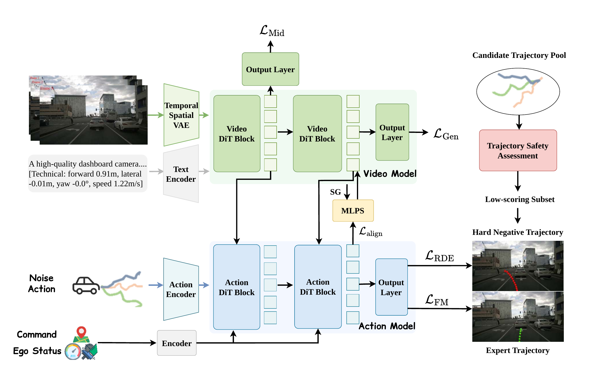
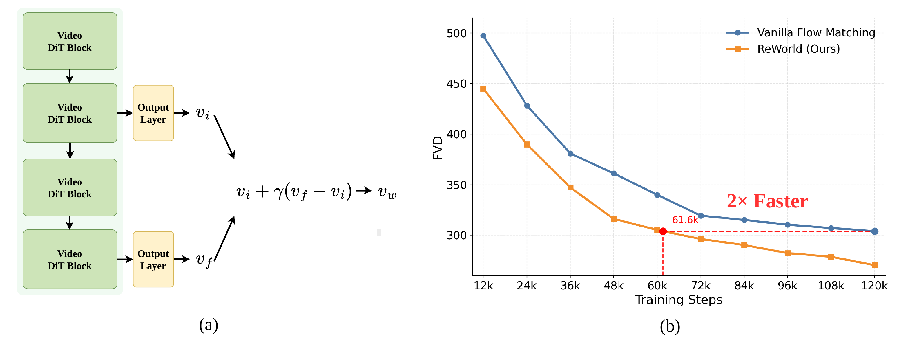

Our arXiv paper ReWorld: Learning Better Representations for World Action Models looks at a practical weakness in current world action models for autonomous driving. Models such as DriveLaW already connect future video generation with trajectory planning, but most of the supervision still lands only at the final outputs: generated video on one side, planned trajectory on the other.
That leaves an important part of the model under-specified. The hidden representations inside the Video DiT and Action DiT carry the scene dynamics, the action context, and the information transferred between the two branches. In standard training, these states are not directly asked to become predictive, transferable, or safety-sensitive. ReWorld makes those internal states part of the training target.
What ReWorld Changes
In the video branch, ReWorld adds lightweight prediction heads to selected intermediate Video DiT layers. These heads predict the same flow-matching velocity target as the final output layer, so future-scene constraints enter earlier in the network instead of appearing only at the end. At inference time, the model also uses the gap between intermediate and final predictions as a self-guidance signal for cleaner future frames.
In the planning branch, ReWorld aligns each action representation with the video representation it attends to. This is a small but important detail: cross-attention lets the planner read from the world model, but reading is not the same as internalizing. The alignment loss encourages the action state to actually absorb the world information that conditioned it.
ReWorld then adds a safety-aware signal. For each training scene, unsafe trajectories are mined from an offline candidate pool scored by the NAVSIM PDM simulator. The planner is trained to keep its predicted trajectory away from unsafe candidates that are geometrically close to the expert trajectory. This helps the action representation separate futures that look similar in coordinates but behave differently in closed-loop evaluation.

What We Found
On nuScenes video generation, ReWorld lowers fine-tuned FVD from 81.3 to 61.9, a 23.9% relative improvement over the DriveLaW baseline. In a from-scratch comparison at 120k steps, ReWorld also outperforms several representation-learning alternatives, including methods that align to external visual encoders. The paper argues that frozen image or short-clip encoders often capture appearance semantics, but do not reliably preserve the long-horizon temporal dynamics needed for driving video prediction.
On NAVSIM Navtest, ReWorld raises PDMS from 89.1 to 90.4 without reinforcement learning post-training or scorer-based post-processing. The gains are not only from smoother imitation. The model improves no-at-fault collision, drivable-area compliance, and time-to-collision scores, which suggests that the representation losses are changing what the planner knows about risky nearby futures.
Why It Matters
For physical AI, a world model is useful only if its representation can support action. ReWorld shows that the bottleneck is not only the architecture connecting video and planning. The hidden states themselves need training signals that match the job they are expected to do: predict how the scene evolves, carry that knowledge into the planner, and distinguish safe futures from plausible but bad ones.
The result is a small shift in how we build world action models. Instead of treating video generation as a proxy task whose benefits may or may not reach planning, ReWorld turns the model's internal representations into explicit learning targets for driving behavior.